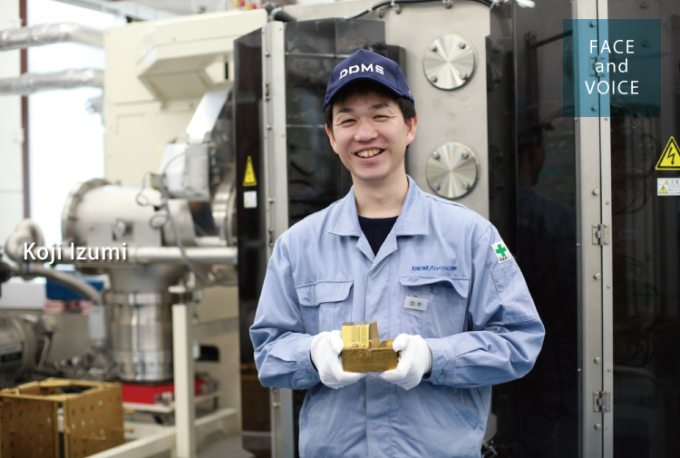
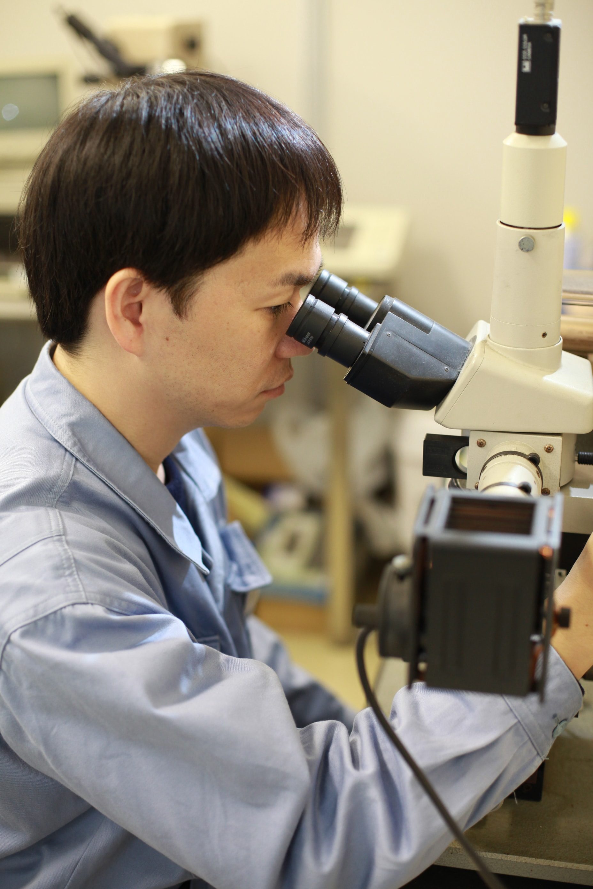

生産本部
静岡工場
熱処理・表面処理室長
出水 宏治

「表面処理なら出水」と言われる存在へ
会社名のDMソリューションとは、金型（Die&Mold）についての問題を解決する（Solution）という意味であり、当社はその名の通り、素材、加工、熱処理、表面処理など金型部材に関するすべてに対応できるのが大きな特長です。そして、私が担当しているのはその中の熱処理と表面処理の領域です。熱処理は鋼を高温で加熱することで組織変化を促し、鉄をより硬くします。また表面処理は鋼の表面にセラミックスの硬い膜をコーティングする加工技術のこと。この技術を日々、開発・改善し、応用しながら、お客様の課題解決に取り組むのが、私の仕事です。
例えば、印象に残っている仕事に金型の変寸についての改善対応があります。これは、あるお客様から問い合わせがあったもので、数種類の温度で焼き入れ・焼き戻しを行いながら実験を繰り返した結果、低変寸でほぼ同じ品質が得られることがわかりました。そこで、この熱処理サイクルを提案したところ、ご採用いただき大きな受注につながりました。このように私の仕事はお客様からの受託加工のため、お客様ごとに要求事項が異なります。そのためお客様との打ち合わせが重要であり、さまざまな方と接点がもてることもこの仕事のおもしろさややりがいですね。これからも知識や技術を積み重ね、表面処理のことなら出水に聞けば「solution」を提案してくれると言われるような存在を目指したいと思っています。
新たな発想がPVDの未来を拓く
実は私は、大学時代は応用電子工学を専攻していました。今の仕事とはまったく畑違いですが、教授から勧められたのが入社のきっかけで、「学校で学ぶことより、会社で学ぶことが大事」というアドバイスをいただき入社を決めました。また父も祖父も大同特殊鋼で働いていたので身近に感じていたこともありますね。実際、鋼のことを学び始めると、そのおもしろさに魅せられました。ですので、学生時代に金属や加工を専攻している方はもちろん、それ以外の分野を学ばれた方でも、やる気さえあって前向きに取り組めば必ず優秀なエンジニアになれると思います。
ここ数年の私の研究開発テーマは、PVDと呼ばれるコーティングの新たな技術の開発です。ひとつは既存製品の機能を超えた新膜の開発で、これは大同特殊鋼の研究部門とコラボしながら試作品づくりを進めています。もうひとつは、通常PVDでは母材との密着力を増すために窒化処理を行うのですが、その処理を省く研究です。そうすることで、コストや工程削減につなげることができます。いずれにせよ、PVDという表面処理技術は大きな可能性を秘めています。入社時に上司から「改善こそが新しい技術を生み、スキルアップにつながる」と教わりました。その言葉を胸に、今も常に「どうすれば改善できるか」を考えながら、新たなPVDの技術開発に取り組んでいます。